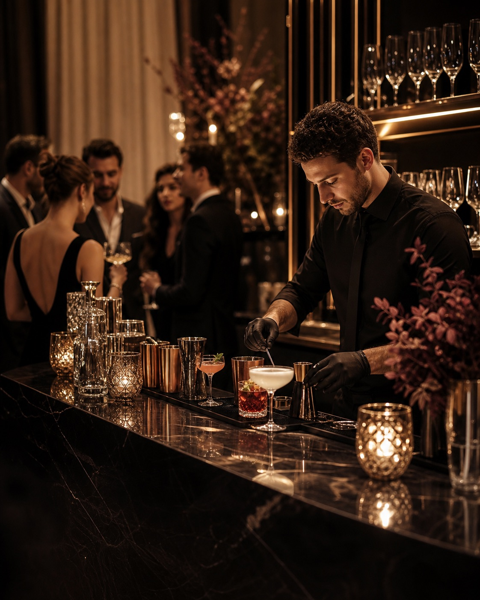

Bartender à domicile
Préparation minute, service professionnel et expérience fluide directement sur le lieu de votre réception.

Un bartender à domicile et un bar mobile élégant pour créer vos cocktails de mariage, animations cocktail d'entreprise et réceptions privées.
Demander un devisWINESS Signature installe un véritable bar à cocktails événementiel à Paris, Neuilly-sur-Seine, Levallois-Perret, Boulogne-Billancourt, Vincennes, Saint-Mandé et Courbevoie.
Préparation minute, service professionnel et expérience fluide directement sur le lieu de votre réception.
Une carte de cocktails personnalisée et un bar mobile premium adapté au rythme de votre mariage.
Animation cocktail pour lancement, inauguration, séminaire ou soirée professionnelle à Paris.
Nos sirops, purées, spiritueux et ingrédients sont sélectionnés selon les listes d'organismes rabbiniques reconnus. La prestation convient notamment aux mariages, Bar Mitsvah et Bat Mitsvah.